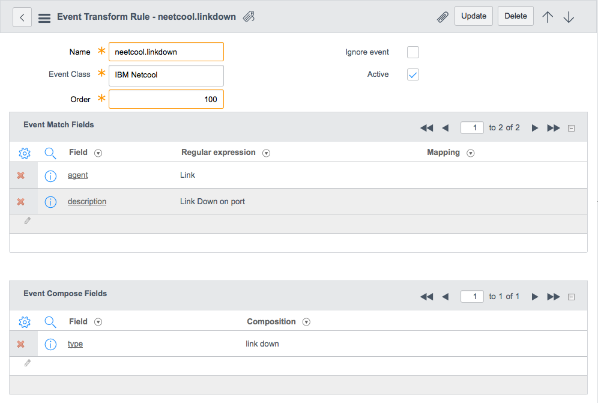
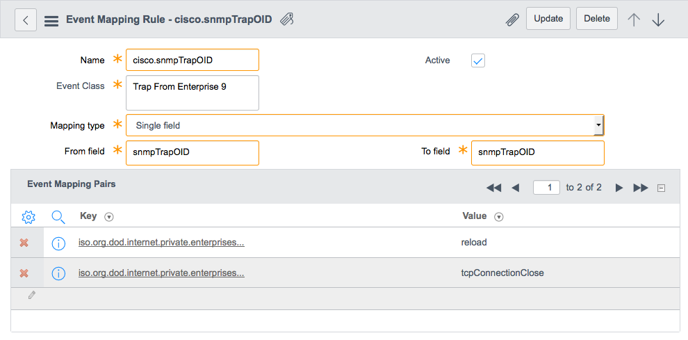
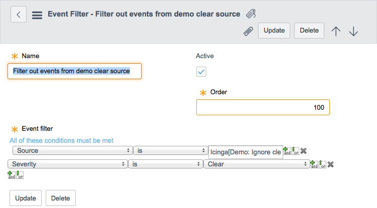

Configuring Event Management
Contents
- 1 Overview
- 2 Viewing and Editing Events
- 3 Configuring Event Sources
- 4 Configuring Event and Alert Processing
- 4.1 Setting the Fetch Limit
- 4.2 Defining Event Types
- 4.3 Registering Nodes
- 4.4 Processing Events with Event Transform Rules
- 4.5 Processing Events with Event Mapping Rules
- 4.6 Filtering Events
- 4.7 Creating Threshold Rules
- 4.8 Configuring Alert Rules
- 4.9 Configuring Alert Updates
- 4.10 Configuring Alert and Incident Closure
1 Overview
You can configure event management behavior, including how many events are processed at a time, which events to exclude from processing, how events are identified in order to associate them with existing alerts or generate new alerts, and rules to automatically execute actions or create incidents.
The evt_mgmt_admin role is required to perform these tasks.
2 Viewing and Editing Events
The Events module allows you to view and edit the Event [em_event] table, which contains all the incoming events generated by external sources.
To view or edit the events, navigate to Event Management > Events. The external events and attributes are shown in the Events form (see table).
{kind=link}
| Field | Description |
|---|---|
| Source | The source that generated the event, such as Icinga or Nagios. |
| Node | The node name, such as IBM-ASSET, associated with the event. Nodes are defined by a source, name, and configuration item to uniquely identify an event. For more information about nodes, see Registering Nodes. |
| Type | The event type, such as high CPU, which is used to identify an event record. For more information, see Defining Event Types. |
| Resource | The resource on the node that generates the event, such as RAM, disk, or database server. |
| Event Class | The category transform and mapping rules used to identify the event. |
| Message Key | The event's unique key generated by combining the source, type, node, and resource values. |
| Severity | The severity of the event. |
| Resolution state | The resolution of the event. Options include:
|
| Time of event | The time the event occurred in the source system. This field is a GlideDateTime field in UTC or GMT format. |
| State | The event's current processing state: Ready, Processed, Ignored, or Error. |
| Alert | The alert associated with the event. This is a unique ID generated by event management to identify the alert. |
| Description | A description of the event. This can be used to define the details of the issue. For example, a server stack trace or details from a monitoring tool. |
| Additional Information | Additional information sent with the event. This information can be used for third-party integration or other post-alert processing. |
| Error Message | Errors found when the event processing fails. |
| Processed | The time the event was processed. |
| Processing duration | The time, in milliseconds, to process this record. |
The REST API inserts events into the Event table with a default state of Ready. Once the background job picks up the record for processing, it sets the state as Queued.Id, where Id is a unique identifier. Once completed, the State field is set to Processed if successful, or Error if an error occurred, and the related error message appears in the Error Message field.
The Event table uses table rotation and partitions the data into seven sections, one for each day of the week. Events are deleted or rotated at the end of the week. If you want to archive the event data you can enable table extensions.
3 Configuring Event Sources
Event Management supports the following methods of retrieving events:
- Pull events from supported external event sources using a MID Server. See Importing Events from Supported External Sources.
- Push events from the external event source using an integration Python script. See Integrating External Events with Event Management.
4 Configuring Event and Alert Processing
Event management processes events in the following order:
- Fetch a batch of events as determined by the fetch limit.
- Apply event types to events.
- Match events to registered nodes and associated configuration items.
- Process event transform rules to insert or update event values.
- Process event mapping rules to insert or update event values.
- Apply event filters to ignore irrelevant events.
- Process alert threshold rules to generate threshold alerts.
- Process alert rules to generate alerts and incidents.
- Updates alerts and associated incidents.
- Determine if existing alerts have exceeded their active interval.
- Determine if existing alerts are flapping.
- Close resolved alerts and incidents.
4.1 Setting the Fetch Limit
To set the number of events to fetch in each batch, navigate to Event Management > Properties and set the following property:
| Property | Description |
|---|---|
| Fetch limit [event_mgmt.fetch_limit] |
Event management processes the events in the Event table in batches. This property determines how many records to process in each batch. Setting this property to a higher or lower value changes the number of records that are loaded into memory. Setting this to a lower number requires more frequent database access; setting this to a higher number requires more memory usage.
|
4.2 Defining Event Types
Incoming events include an event type that describes the issue on the external system. Typically these values depend on what the external source monitors. For example, an event type might be related to high CPU usage or memory performance. These event types are used, along with source, node, and resource, to match events from the source to records in the Event table to identify them and eliminate duplicates.
The type from the event source is compared to the existing types in the Pattern column of the Event Type [em_event_type] table. If an incoming event type is not already in the Event Type table, a new entry is automatically created, and the type value from the source inserted into the Name and Pattern columns. Because both name and pattern must be unique values, if this value conflicts with an existing name or pattern in the table, the system tries to add a suffix that is an auto-incremented number (1-9). If a unique value is not generated after 10 tries, no new type is added. If a pattern is not received from the event source, event management automatically creates an event type entry using the same value for both Name and Pattern.
To manually add an event type:
- Navigate to Event Management > Event Types.
- Click New.
- Enter a name and pattern for the event type.
- Click Submit.
{kind=link}
4.3 Registering Nodes
Registering a node allows the event management integrator to associate events from a node to a configuration item in the ServiceNow CMDB. To register a node:
- Navigate to Event Management > Registered Nodes.
- Click New.
- Fill in the fields, as appropriate (see table).
- Click Submit.
{kind=link}
| Field | Description |
|---|---|
| Source | The event source that is integrated with ServiceNow event management, such as Icinga or Nagios. |
| Node name | A name to identify the node. |
| Configuration item ID | The configuration item ID in the Configuration Item [cmdb_ci] table. |
If you do not want to register and maintain mapping, you can send that information dynamically in each event. Event management attempts to resolve the corresponding configuration item ID from incoming events by:
- Checking if there is a mapping in the Registered Nodes [em_registered_nodes] table.
- Looking up the event's node value in the Name column of the Configuration Item [cmdb_ci] table.
- Looking up any keys in the event's ci_identifier value in the Configuration Item table columns. For example, in the {"name":"Macbook-Air";"fqdn":"laptop1.somecollege.edu"} string, the name key matches the name column and the fqdn key matches the fqdn column in the Configuration Item table.
If none of these methods finds a matching record, the Configuration Item field is left empty for the alert.
4.4 Processing Events with Event Transform Rules
Event transform rules allow you to normalize and transform events based a set of matching criteria (starting with the Fuji release). For example, you may want to convert different varieties of the same event value to a single preferred event value.
To create an event transform rule:
- Navigate to Event Management > Event Transform Rules.
- Click New.
- Fill in the fields, as appropriate (see table).
- Click Submit.
- Event transform rule
{kind=link}
| Field | Description |
|---|---|
| Name | A name to identify the event transform rule. |
| Event Class | The category to which this transform rule applies. The transform rule only applies to events with the same event class value. |
| Order | The order in which the event transform rule is evaluated if multiple rules are defined. Event transform rules are evaluated in ascending order. |
| Ignore event | A checkbox that indicates what action to take when events match this rule's criteria. When selected, the system ignores matching events and does not create an alert. |
| Active | A checkbox that activates or deactivates the event transform rule. |
| Event Match Fields | The list of field values an event must contain to match this rule's criteria. An event must match all values in the event match fields embedded list to apply the the ignore action or to insert or update field values with the Event Compose Fields. |
| Event Compose Fields | The list of field values you want to insert or update in the corresponding alert. |
4.4.1 Event Match Fields
The Event Match Fields embedded list contains all the values an event must contain to match an event transform rule's criteria. This embedded list consists of the following fields.
| Field | Description |
|---|---|
| Field | The field the event transform rule searches for a matching value. This field can either be from the Event [em_event] table or a field defined by a name-value pair in the event's Additional Information field. |
| Regular expression | The regular expression search string the event transform rule uses to identify matching event values. This string can include dynamic values from one or more event fields by including one or more wildcard regular expression groupings. For example, the regular expression (.*) allows for one field mapping. The regular expression (.*) string (.*) allows for two field mappings. |
| Mapping | Specifies what event field or name-value pair to use in place of a wildcard regular expression grouping. For example, a value of node means the event transform rule replaces the wildcard regular expression grouping with the current event's node value such as linux1. |
4.4.2 Event Compose Fields
The Event Compose Fields embedded list contains all the values you want to insert or update into an event when the Event Match Fields are met. You can use these rules to normalize event data or transform it to a more useful format.
| Field | Description |
|---|---|
| Field | The field the event transform rule inserts or updates a value. This field can either be from the Event [em_event] table or a field defined by a name-value pair in the event's Additional Information field. |
| Composition | Specifies what value to insert or update into the field. This value can use dynamic data from the Event [em_event] table or a field defined by a name-value pair in the event's Additional Information field. Specify dynamic data with the following format: ${field}. |
4.5 Processing Events with Event Mapping Rules
Event mapping rules allow you to copy and update event values for a particular event field (starting with the Fuji release). To create an event mapping rule:
- Navigate to Event Management > Event Mapping Rules.
- Click New.
- Fill in the fields, as appropriate (see table).
- Click Submit.
- Event mapping rule
{kind=link}
| Field | Description |
|---|---|
| Name | A name to identify the event mapping rule. |
| Event Class | The category to which this matching rule applies. The mapping rule only applies to events with the same event class value. |
| Mapping type | The mapping mechanism used to change an event field value. Options include:
|
| Active | A checkbox that activates or deactivates the event mapping rule. |
| From field | The event field where the mapping rule searches for a value. |
| To field | The event field where the mapping rule inserts or updates the value. When this field is identical to the From field, the mapping rule updates the event field's value in memory. |
| Value | The value you want to use for the To field. This field is only visible when the mapping type has a value of constant. |
| Event Mapping Pairs | This embedded list displays the field values you want the mapping rule to replace with new values. This list is only visible when the mapping type has a value of single field. |
4.5.1 Event Mapping Pairs Fields
This embedded list displays the field values you want the mapping rule to replace with new values. Typically these mappings convert vendor-specific codes into human readable values.
| Field | Description |
|---|---|
| Key | The value the mapping rule searches for. Whenever the event field has this value, the mapping rule adds the value listed in the Value field to the field listed in the To field. |
| Value | The value you want to insert or update into the To field. The mapping rule overwrites any existing value in the To field. |
4.6 Filtering Events
Event filters allow you to exclude events that you do not want converted into alerts. To create an event filter:
- Navigate to Event Management > Event Filter.
- Click New.
- Fill in the fields, as appropriate (see table).
- Click Submit.
- Event Filter
{kind=link}
| Field | Description |
|---|---|
| Name | A name to identify the filter. |
| Active | A check box that activates or deactivates the event filter. |
| Order | The order in which the event filter is evaluated if multiple filters are defined. Event filters are evaluated in ascending order. |
| Event filter | A condition statement that filters out the events to exclude. Use the condition builder to construct the statement. |
4.7 Creating Threshold Rules
Threshold rules allow the creation of alerts when specific event values are met or exceeded (starting with the Fuji release).
To create a threshold rule:
- Navigate to Event Management > Threshold Rules.
- Click New.
- Fill in the fields for threshold rule record (see table).
- Click Submit.
{kind=link}
| Field | Description |
|---|---|
| Name | A name to identify the alert threshold rule. This name becomes the alert name. See the alert Work notes for the name of the alert threshold rule that generated the alert. |
| Threshold Metric | The event metric whose value triggers an alert when the threshold is met. This metric and its value must be listed in the event's Additional Information field. There should only be one threshold rule per metric. No two threshold rules should define the same event metric. Furthermore, each event should only contain one event metric as threshold rules can only process one metric per event. If an event contains multiple metrics, the alert process will produce unexpected results. |
| Active | A check box that activates or deactivates the alert threshold rule. |
| Order | The order in which the alert threshold rule is evaluated if multiple filters are defined, in ascending order. |
| Alert template | The template used to populate values in the alert. |
| Event Filter Criteria | |
| Event filter | A condition statement that filters out events so they do not create alerts. Use the condition builder to construct the statement. |
| Create Alert Criteria | |
| Operator | [Optional] The operator used to compare the threshold metric to a user defined value. Options include --None--, >, >=, <, <=, =, and !=. If the criteria matches, the threshold alert is generated. Use the None value to create count-based threshold rules where you want to track how often an event metric appears in a given timeframe. |
| * (Value) | The value the metric must meet to create the threshold alert. This field is only visible when the Operator is a value other than none. |
| Occurs | [Optional] The number of times the event must occur to generate this alert. |
| Over(seconds) | The number of seconds in which the event threshold metric must occur to generate the alert. The value 0 specifies an infinite time frame and can be used to exclude time from this threshold. |
| Close Alert Criteria | |
| Operator | [Optional] The operator used to compare the threshold metric to a user defined value. Options include --None--, >, >=, <, <=, =, and !=. If the criteria matches, the threshold alert is closed. Count-based threshold rules typically close an alert when the alert has not been seen for a given amount of time such as zero occurrences in a given time frame. |
| * (Value) | The value the metric must meet to close the threshold alert. This field is only visible when the Operator is a value other than None. |
| Occurs | [Optional] Number of times the event must occur to close this alert. |
| Over(seconds) | The number of seconds in which the event threshold metric must occur to close the alert. The value 0 specifies an infinite time frame and can be used to exclude time from this threshold. |
4.7.1 Creating Multiple Threshold Rules for Events from the Same Source
The system requires that each threshold rule map to a unique Message key or a unique combination of identifying values for the event Source, Node, Type, and Resource fields. Since the event monitoring tool controls the values of the Source and Resource fields, administrators who want to create multiple event threshold rules for events from the same source must distinguish these events either with a unique Message key, type, or node value. Creating a new event type is the preferred means of creating multiple threshold rules from the same source so that the system can identify these events, regardless of the node they originate from.
For example, suppose you want to create threshold rules for both the CPU and Memory metrics from the same Icinga source. You must first create distinct event types for these two metrics:
{kind=link}
Then you can create a threshold rule for each event type:
{kind=link}
You can see the connection between the event type and threshold rule on an alert:
{kind=link}
4.8 Configuring Alert Rules
Alert rules allow you to define overwrite alert templates and incident templates:
- An overwrite alert template that is associated with an alert rule modifies the fields of an alert before the alert is inserted into the Alert table or updated. This can be used, for example, to reduce the severity of alerts on test configuration items or test sources. The overwrite alert template defines a condition for matching alerts and provides a template on the Alert table, which is used to populate or overwrite fields on the matching alert.
- An incident template is automatically applied to create an incident when an alert matches the alert rule’s criteria. For example, if the condition is for alerts with a Severity that is Critical, the action might be to set the assignment group, category, priority, and description for a generated incident. When a user creates an incident manually from the Alert form using the Create Incident button, all auto open rules and non-auto open rules are considered.
In the Alert Rules module you can define the overwrite alert template and incident templates. An alert rule consists of two main parts: the conditions that an alert must meet for the rule to apply, and the rule action.
To define alert rules:
- Navigate to Event Management > Alert Rules.
- Click New.
- Enter a name for the rule.
- Use the condition builder to define the conditions that must be met for the rule to be applied.
- To define an Overwrite alert template, select a template or create one to specify how the rule is applied.
- To automatically create an incident, select the Auto acknowledge and Auto open check boxes, and select or create a template for how the auto create is applied.
- Click Submit.
{kind=link}
| Field | Description |
|---|---|
| Name | [Required] A name to identify the alert rule. |
| Active | A check box that activates or deactivates the rule. |
| Order | The order in which the alert rule is evaluated if multiple rules are defined, in ascending order. |
| Alert filter | [Required] A condition statement that defines what alerts automatically create the incident or execute the overwrite. Use the condition builder to construct the rule. |
| Auto acknowledge | A check box that enables or disables automatic acknowledgement of the alert. An acknowledged alert indicates that a user is aware of the issue. |
| Overwrite alert template | The alert template [em_alert_template] to use to overwrite the alert before it is inserted or updated. See Creating a Template. |
| Knowledge article | The knowledge article that provides a workaround or solution for this alert. See Knowledge Management. |
| Auto open | A check box that enables or disables automatically opening an incident. This check box must be selected to create an incident automatically. |
| Incident template | The incident template [em_incident_template] to use to create an incident if Auto open is enabled. See Creating an Incident Template. |
4.8.1 Configuring Alert and Incident Behavior
You can configure what actions are taken when an alert is closed and reopened, and when an incident is resolved.
To configure alert behavior, navigate to Event Management > Properties and set any of the following properties:
| Field label | Property | Default value |
|---|---|---|
| Enable multi node event processing | evt_mgmt.event_processor_enable_multi_node | false |
| Number of scheduled jobs processing events | evt_mgmt.event_processor_job_count | 1 |
| Minimum schedule that the user can set for connectors | evt_mgmt.connector.minimum_schedule | 120 |
| Auto close interval (time interval, in hours, within which open alerts will be automatically closed); Set it to 0 will disable this feature. | evt_mgmt.alert_auto_close_interval | 168 |
| Active interval (time interval, in seconds, within which a new event reopens a closed alert) | evt_mgmt.active_interval | 14400 |
| Test Connector Timeout Interval | evt_mgmt.connector_test.progress_timeout | 120 |
| Display logs for debugging | evt_mgmt.log_debug | false |
| Flap interval (time interval, in seconds, within which an alert enters the flapping state) | evt_mgmt.flap_interval | 120 |
| Flap frequency (frequency an alert must reoccur to enter the flapping state). An alert enters the flapping state if its flap count meets or exceeds this property within the time period defined by the flap interval property. | evt_mgmt.flap_frequency | 10 |
| Flap quiet interval (quiet time, in seconds, that must pass for an alert to exit the flapping state). An alert exits the flapping state if the difference between the alert's last flap time and the time of the new event exceeds this value. | evt_mgmt.flap_quiet_interval | 300 |
| Fetch limit (number of queued events to fetch at a time by the event processor) | evt_mgmt.fetch_limit | 500 |
| Manually closing an alert will acknowledge it | evt_mgmt.alert_ack_on_close | true |
| Closing alerts will: | evt_mgmt.alert_closes_incident | resolve |
| Reopening alerts will: | evt_mgmt.alert_reopens_incident | new |
| Resolving an incident closes the associated alerts | evt_mgmt.incident_closes_alert | true |
| The name of the MID server that connector instances can use as default | mid.server.connector_default |
4.9 Configuring Alert Updates
Event Management processes alert updates by determining if existing alerts are still active and determining if an alert is in a flapping state.
4.9.1 Setting the Alert Active Interval
To customize the alert active interval:
- Navigate to Event Management > Properties.
- Edit the property (see table).
- Click Save.
| Property | Description |
|---|---|
| Active interval [evt_mgmt.active_interval] |
Sets the alert active interval to identify how long an event with the same identifying information can update an existing alert. Events within this interval update the existing alert. Events outside this interval create new alerts.
|
4.9.2 Configuring Alert State Flapping Detection
Set the flapping properties to determine when an alert enters and exits the flapping state. Alerts enter the flapping state when the current flap count is equal to or greater than the flap frequency within the time period of the flap interval. Alerts exit the flapping state when the time interval between the latest occurrence of the event and the flap last update time is greater than the flap quiet interval.
To customize the alert state flapping properties:
- Navigate to Event Management > Properties.
- Edit the properties (see table).
- Click Save.
| Property | Description |
|---|---|
| Flap interval [event_mgmt.flap_interval] |
The time interval within which an alert enters into the flapping state. An alert enters the flapping state if its flap count meets or exceeds the flap frequency value within the flap interval time period.
|
| Flap frequency [event_mgmt.flap_frequency] |
The number of times an event must reoccur within the flap interval time period for the alert to enter the flapping state. An alert enters into the flapping state if its flap count meets or exceeds the flap frequency within the flap interval.
|
| Flap quiet interval [event_mgmt.flap_quiet_interval] |
The time interval that determines whether an alert exits the flapping state. An alert exits the flapping state if the time between alert's last flap update and the time of the new event exceeds this property.
|
4.10 Configuring Alert and Incident Closure
Set the following properties to determine what happens when the system closes alerts and incidents.
| Property | Description |
|---|---|
| Manually closing an alert will acknowledge it [evt_mgmt.alert_ack_on_close] |
Determines if manually closing an alert acknowledges the alert.
|
| Closing alerts will [evt_mgmt.alert_closes_incident] |
Determines the action the system takes when an alert is closed.
|
| Reopening alerts will [evt_mgmt.alert_reopens_incident] |
Determines the action the system takes when an incident is reopened.
|
| Resolving an incident closes the associated alerts [evt_mgmt.incident_closes_alert] |
Determines if associated alerts are closed when an incident is resolved.
|
| Auto close interval [evt_mgmt.alert_auto_close_interval] |
The number of hours the system waits until it automatically closes an expired alert. Setting this property to a value of zero disables this feature.
This property is available starting with the Fuji release.
|